Next: Bibliography
Up: Transference in Spaces of
Previous: Proof of the Main
In the remainder of this paper,
we transfer a result from Littlewood-Paley theory in
 to spaces of measures on which
to spaces of measures on which
 is acting.
We then show
how this transferred result implies
with ease several of the main results of Bochner [3],
de Leeuw and Glicksberg [6], and Forelli [9].
is acting.
We then show
how this transferred result implies
with ease several of the main results of Bochner [3],
de Leeuw and Glicksberg [6], and Forelli [9].
We start by setting our notation. Let
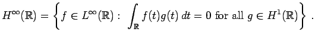
Let
 denote a space of measures and
let
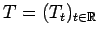 denote a sup path attaining representation of
by isomorphisms of 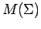.
According to Forelli [9],
a measure
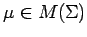
is called 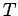-analytic if
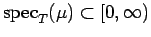.
We now introduce another equivalent definition.
denote a space of measures and
let
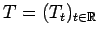 denote a sup path attaining representation of
by isomorphisms of 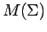.
According to Forelli [9],
a measure
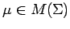
is called 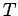-analytic if
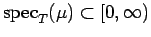.
We now introduce another equivalent definition.
Definition 4.1
Suppose that is a sup path attaining representation of
by isomorphisms of . A measure
 is
called weakly analytic if the mapping
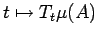
is in
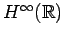 for every
is
called weakly analytic if the mapping
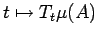
is in
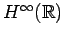 for every
 .
.
It is easy to see that if 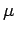 is -analytic then it is
weakly analytic. The converse is also true. The proof is based on the
fact that
 is a set of spectral synthesis (see [1, Proposition 1.7]).
is a set of spectral synthesis (see [1, Proposition 1.7]).
For
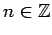,
let
 be the function whose Fourier
transform is piecewise linear and satisfies
be the function whose Fourier
transform is piecewise linear and satisfies
Let
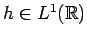 be the function whose Fourier transform is piecewise
linear and satisfies
![$\displaystyle \widehat{h}(s)=\left\{ \begin{array}{ll} 0 & \mbox{if $s\not\in [-1,1]$,}\\ 1 & \mbox{if $\vert s\vert\leq \frac{1}{2}$.} \end{array} \right.$](img267.png) |
(23) |
It is easy to check that
and that the left side of
(24) is continuous and piecewise linear.
The following theorem is a consequence of
standard facts from Littlewood-Paley theory.
We postpone its proof to the end of this section.
Theorem 4.2 (i)
Let  and 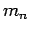 be as above,
and 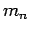 be as above,
 be any function in
,
and
be any function in
,
and  be any
nonnegative integer. Then
there is a
positive constant
be any
nonnegative integer. Then
there is a
positive constant  , independent of and , such that
for any choice of
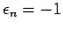 or
, independent of and , such that
for any choice of
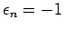 or  .
(ii) For
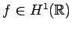, we have
.
(ii) For
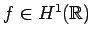, we have
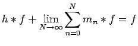
unconditionally in
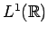.
(iii) For
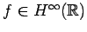, we have
almost everywhere on
.
Our main theorem is the following.
Theorem 4.3
Let be a representation of
in
that is sup path attaining,
and let and
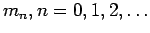
be as in Theorem 4.2. Suppose that
is weakly analytic. Then
for any choice of
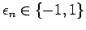,
where is as in (25),
 as in (1) and
as in (1) and  as in (7).
Moreover,
where the series converges unconditionally in
.
as in (7).
Moreover,
where the series converges unconditionally in
.
Proof. To prove (27),
combine Theorems 1.6 and 4.2.
Inequality (27) states that the partial sums of the series
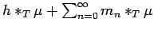
are unconditionally bounded.
To prove that they converge unconditionally, we recall
the Bessaga-Pe czynski Theorem from [2]. This theorem
tells us that for any Banach
space, every unconditionally bounded series is
unconditionally convergent if and
only if the Banach space does not contain an isomorphic copy of 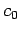.
Now since
is weakly complete and is not
(see [7, Chap IV.9, Theorem 3, and IV.13.9]), we conclude that
does not contain .
Applying the Bessaga-Peczynski Theorem, we infer that there is a measure
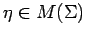
such that
czynski Theorem from [2]. This theorem
tells us that for any Banach
space, every unconditionally bounded series is
unconditionally convergent if and
only if the Banach space does not contain an isomorphic copy of 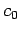.
Now since
is weakly complete and is not
(see [7, Chap IV.9, Theorem 3, and IV.13.9]), we conclude that
does not contain .
Applying the Bessaga-Peczynski Theorem, we infer that there is a measure
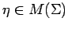
such that
unconditionally in . Moreover, 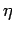 is weakly measurable,
because of (29).
It remains to show that 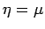.
By Proposition 2.4,
it is enough to show that
for every
, we have
 |
(30) |
for almost every
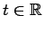.
Since is weakly analytic, the function
is in
.
By Theorem 4.2 (iii),
we have
for almost every
. On the other hand, from
the unconditional convergence of the series in
(29), (1), and (3), it
follows that
for all
. Comparing (31) and
(32), we see that (30)
holds, completing the proof of the theorem.
Remarks 4.4 It is interesting to note that
Theorem
4.3
implies the classical
F. and M. Riesz theorem for measures defined on the real line.
To see this, consider the representation
of
acting by translation on the Banach space
of complex regular
Borel measures on
.
It is easy to see that a regular Borel measure is analytic
if and only if its Fourier-Stieltjes transform is supported in
.
In this case, each term in
(
28) belongs to
,
being the convolution of an
function with a regular Borel measure.
Thus, the unconditional convergence of the
series in (
28) implies that the
measure is absolutely continuous.
This argument provides a
new proof of the F. and M. Riesz Theorem,
based on Littlewood-Paley theory and the result of
Bessaga-Peczynski [2]. Also, it can be used to
prove the following version of Bochner's generalization of the F. and M. Riesz Theorem.
Theorem 4.5
Suppose that 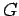 is a locally compact abelian group with
dual group  , and
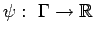 is a
continuous homomorphism. Suppose that
, and
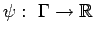 is a
continuous homomorphism. Suppose that
 is such that,
for every real number 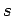,
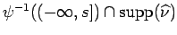 is compact.
Then 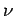 is absolutely continuous with
respect to Haar measure on . That is,
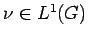.
is such that,
for every real number 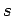,
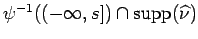 is compact.
Then 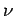 is absolutely continuous with
respect to Haar measure on . That is,
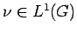.
Proof.
Let
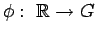 denote the continuous adjoint homomorphism
of  . Define a representation
of
on
the regular Borel measures 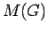 by
. Define a representation
of
on
the regular Borel measures 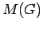 by
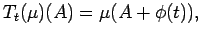
for all
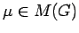 and all Borel subsets
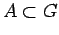.
By Example 2.2, is sup path attaining,
and every measure
is weakly measurable.
Moreover,
is weakly analytic (equivalently, -analytic)
if and only if
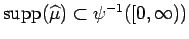 (see
[6]).
To prove the theorem, we can, without loss of generality,
suppose that
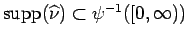.
Otherwise, we consider the measure
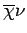, where
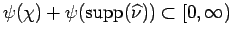.
Let
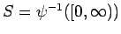. Then  is a
is a  -set. Applying Theorem 4.3, we see that
-set. Applying Theorem 4.3, we see that
unconditionally in .
For
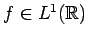, a
straightforward calculation shows that
for all
.
Since
is compact
for every
, it follows that
and
are compact. Thus and
are in
, and hence they belong to  .
As a consequence, (33) implies that
.
.
As a consequence, (33) implies that
.
With Theorem 4.3 in hand, we can derive with ease
several fundamental properties of analytic measures
that were obtained previously by
de Leeuw-Glicksberg
[6], and
Forelli [9]. We note however, that the techniques
in [6] and [9] do not apply
in our more general settings.
Theorem 4.6
Let be a representation of
in
that is sup path attaining,
and let be a
weakly analytic measure in .
Then the mapping
is
continuous from
into .
Proof. Using the uniform continuity
of translation in
, it is a simple matter to show that
for any function
, and any weakly measurable
, the mapping
is continuous.
Now use Theorem 4.3 to complete the proof.
Theorem 4.6 is very specific to
representations of
or
, in the sense that
no similar result holds on more general groups.
To see this, consider the
group
with a lexicographic order on the dual
group
 . Let denote the normalized Haar
measure on the subgroup
, and consider the measure
. Its spectrum is supported on
the coset
and thus it is
analytic with respect to the
regular action of by translation in
. Clearly, the measure
does not translate continuously, and so
a straightforward analog of
Theorem 4.6
fails in this setting.
. Let denote the normalized Haar
measure on the subgroup
, and consider the measure
. Its spectrum is supported on
the coset
and thus it is
analytic with respect to the
regular action of by translation in
. Clearly, the measure
does not translate continuously, and so
a straightforward analog of
Theorem 4.6
fails in this setting.
The following application concerns bounded operators  from into
that commute with in the following sense:
from into
that commute with in the following sense:
for all
.
Theorem 4.7
Suppose that is a representation of
that is sup path
attaining,
and that commutes with .
Let
be weakly analytic.
Then
 is also weakly analytic.
is also weakly analytic.
Proof.
First note that by Theorem 4.6, the mapping
is continuous, and hence measurable.
Now suppose that
. Again, by Theorem 4.6,
the
map
is Bochner integrable.
Let
Then by properties of the Bochner integral,
and since is weakly analytic, we have that
for all
Hence .
Therefore, for all
we have
Since this is true for all
, it follows that
is weakly analytic.
Definition 4.8
Let be a sup path attaining
representation of in .
A weakly measurable  in is
called quasi-invariant if
and
are mutually absolutely continuous for all
in is
called quasi-invariant if
and
are mutually absolutely continuous for all  . Hence
if is quasi-invariant
and
, then
. Hence
if is quasi-invariant
and
, then
 if and only if
for all .
if and only if
for all .
We can use Theorem 4.7 to generalize a result of
de Leeuw-Glicksberg [6]
and Forelli [9], concerning quasi-invariant measures. In this application, it
is necessary to restrict
to sup path attaining representations given by isometries of .
We need a lemma.
Lemma 4.9
Suppose that is a linear isometry of onto itself.
Let ,
. Then,
(a) and are mutually singular (in symbols,
)
if and only if
;
(b)
if and only if
Proof. For (a), simply recall that two measures and
are mutually singular if and only if
, and
 .
For (b), it is clearly enough to prove the implication in one direction.
So suppose that
and write
where
and
.
Then
. Hence
, and hence
.
But
implies that
. So
. Thus
.
.
For (b), it is clearly enough to prove the implication in one direction.
So suppose that
and write
where
and
.
Then
. Hence
, and hence
.
But
implies that
. So
. Thus
.
Theorem 4.10
Suppose that is a sup path attaining representation
of
by isometries of . Suppose
that
is weakly analytic, and
is quasi-invariant. Write
 for the Lebesgue decomposition of
with respect to . Then both
for the Lebesgue decomposition of
with respect to . Then both
 and are weakly analytic. In particular,
the spectra of and are
contained in
.
and are weakly analytic. In particular,
the spectra of and are
contained in
.
Proof. Let
.
Since is quasi-invariant, the operator
commutes with by Lemma 4.9.
Now apply Theorem
4.7.
Let us finish with an example to show that the hypothesis of
sup path attaining is required in these results. The
next example is a variant of Example 2.5.
Example 4.11 Let denote the sigma algebra of countable
and co-countable subsets of
, let denote
the Borel subsets of
, and let
denote the product sigma algebra on
.
Let
be the measure that takes countable sets
to 0 and co-countable sets to
, let
be the measure that takes sets to
if they contain , and to 0 otherwise,
and let

denote the measure on given by
Let
,
let
, and
let
.
Finally, let

be the representation given by
.
Then, we see that is quasi-invariant, and that
 and are mutually singular.
Arguing as in
Example 2.5, we see that is weakly analytic.
However, the singular part of with respect to
is , and it may be readily seen that this is
not weakly analytic, for example
and are mutually singular.
Arguing as in
Example 2.5, we see that is weakly analytic.
However, the singular part of with respect to
is , and it may be readily seen that this is
not weakly analytic, for example
is not in
.
We end this section by proving Theorem 4.2.
We have
Recall the Fejér kernels
, where
By Fourier inversion, we see that
Theorem 4.12 (i)
Let be any function in
, and let
and be arbitrary positive integers. Then
there is a
positive constant , independent of and such that
 |
(37) |
for any choice of
or 1. (ii) Moreover,
for
,
unconditionally in
.
Proof.
The proof of (ii) is immediate from (i) and (34),
by Fourier inversion.
For part (i),
use (36),
to write
Hence, to prove (37)
it is enough to show that there is a positive constant
, independent of such that
, for .
Appealing to [15, Theorem 3, p. 114], we will be done once we
establish that:
and the Hörmander condition
where and  are absolute constants.
Inequality (38)
holds with , since the
Fourier transforms of the summands defining the
kernels have disjoint supports and are
bounded by 1. Condition (39), is well-known.
For a proof, see [8, pp. 138-140, and 7.2.2, p. 142].
are absolute constants.
Inequality (38)
holds with , since the
Fourier transforms of the summands defining the
kernels have disjoint supports and are
bounded by 1. Condition (39), is well-known.
For a proof, see [8, pp. 138-140, and 7.2.2, p. 142].
Proof of Theorem 4.2.
Parts (i) and (ii) follow
as in Theorem 4.12,
so we only prove (iii).
For notational convenience, let
Let denote the de la Vallée
Poussin kernels on
of order .
Its Fourier transform is
continuous, piecewise linear,
and satisfies
It is well-known that is a summability kernel for
and, in particular, that
converges pointwise almost everywhere to
for all
 , for
.
Thus, we will be done, if we can show that for
,
, for
.
Thus, we will be done, if we can show that for
,
Write
,
where is as in (40).
For , the Fourier transform of
,
vanishes on
.
Thus, for
, we have
, and so
(42) follows, and the proof
is complete.
Acknowledgements The work of the second author was supported
by a grant from the National Science Foundation (U.S.A.).
Next: Bibliography
Up: Transference in Spaces of
Previous: Proof of the Main
Stephen Montgomery-Smith
2002-10-30